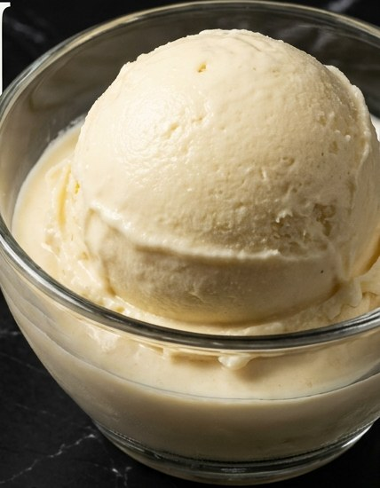
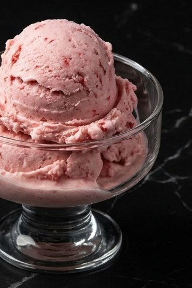

PROJECT 100 / Kitchen laboratory
Protein ice cream.
Built to scoop.
Ninja CREAMi XL. A measured base, three protein families and eighteen ways to make it yours. Explore the recipe, understand the texture, then keep the complete book beside your machine.


Choose / open / make
Find your next pint.
Four cards at a time · fade every 5 seconds
Macros are the Final Edition’s per-pint ledger, not a new package-label audit. “Zero Sugar” is a recipe name in the book; check the actual milk, powder and inclusion labels.
One architecture / dual measures
Build the base.
Liquids + protein
Texture calibration
These spoon-to-gram equivalents are the book’s calibration. Weigh the actual product; gum density varies. Pudding overrides the isolate setting.
Target before freezing: 600–645 g [21.2–22.8 oz] per pint in the book. The tub’s MAX FILL line always takes priority. Do not force a batch to meet both by overfilling.
Use the measured water range rather than adding every ingredient at its upper limit. Scoops and spoon weights are approximate; a scale resolves differences.
Fat tiers, pudding and the two milk ledgers
Optional texture tiers
Tier 1 almond butter: 1 tsp [5 g / 0.18 oz], recorded addition 33 kcal / 1.3 g protein / 2.7 g fat. Tier 2: 1 tbsp [15 g / 0.53 oz], 100 kcal / 4 g protein / 8 g fat. Apply only where the recipe calls for it; the displayed recipe totals already include specified additions.
Pudding: 1 tbsp [15 mL; ≈8 g / 0.28 oz] in the specified recipes, with gum reduced to ⅛ tsp [0.5 g / 500 mg].
Keep the ledgers separate
The current recipe cards use the book’s Kirkland ultrafiltered 2% milk ledger. The older Silk protein milk ledger remains in book pages 22–24. Replacing the milk does not remove milk allergens from whey/casein powders.
Prep / freeze / process
Seven steps. A repeatable pint.
Book quantities with the NC500-series manufacturer’s operating baseline. The original book remains unchanged; practice differences are explained below.
- 01 / Weigh dry ingredients
Choose the powder, gum dose and flavour card. Dry-mix the gum through the other powders before hydration to reduce clumps. A spoon is a convenience measure; the calibrated gram weight governs.
- 02 / Hydrate + blend
Hydrate the broth and collagen in the hot water in a separate heatproof vessel. Add cold milk and pasteurized liquid egg whites, then the dry matrix. Blend until uniform; the book records about 90 seconds.
- 03 / Settle + check
Rest the mixed base for about 15 minutes. Weigh the batch against the book’s 600–645 g [21.2–22.8 oz] range and check the tub’s MAX FILL line.
- 04 / Freeze level
Fit the lid. Freeze on a level surface for at least 24 hours. The manufacturer gives a freezer range of −13 to −22°C [9 to −7°F].
- 05 / Inspect the surface
If frozen unevenly, melt in the refrigerator, whisk and refreeze level. Do not drill or forcefully break a frozen block with a knife.
- 06 / Process + finish
Use LITE ICE CREAM for low-fat or sugar-substitute bases. If adding inclusions, use the MIX-IN route before any RE-SPIN. Without inclusions, RE-SPIN can finish a powdery result. The book’s optional 1–2 tbsp [15–30 mL / 0.5–1 fl oz] milk is owner texture tuning.
- 07 / Clean + store
Unplug. Clean removable parts separately; wipe the motor base and spindle with a damp cloth. Smooth leftovers with a spoon before refreezing. Keep ingredients refrigerated until preparation.
Three inclusion tiers · keep crunch and swirls distinct
01 / Machine mix-in
Small chopped nuts, cacao nibs or mini chips. Make the manual’s spoon cavity in the already processed portion, then MIX-IN. It is not a hole drilled into solid frozen base.
02 / Fold gently
Fragile protein dough and crunch bits: fold with a spoon after processing. Where the edition gives no weight, the web guide does not invent one.
03 / Ribbon last
Caramel or fudge: fold lightly through the finished cream for a visible swirl. Added sauces and inclusions change nutrition totals.
Understand / compare / troubleshoot
The detail behind the scoop.
Food science · what the numbers do and do not establish
Sweetener and freezing
The book’s 1.9× allulose figure comes from sucrose-to-allulose molecular masses, about 342.3 ÷ 180.16. That ideal particle-count comparison is not a measured freezing curve for this milk/protein mixture. Sweetener blends with different bulking agents will behave differently.
Gum concentration
In a 600 g base, 0.5 g is 0.083% by weight; 1.0 g is 0.167%. The edition’s “0.25% anti-slime law” is a kitchen texture guideline, not a universal cross-link threshold. Powder, starch, gums and processing all matter.
Protein is not all a stabilizer
Hydrolyzed collagen peptides are not gelatin. Broth and collagen are recorded here as protein ingredients; they do not prove a gel network. Cream of tartar at the cold recipe dose is a flavour/acidity adjustment.
800 W is a model context
The book’s “lathe” description is an analogy for processing a frozen base. It is not a measured force, temperature or motor-load model. Confirm the model and rating on your own appliance label.
Book practice versus the machine manual
Reference: SharkNinja NC500-series owner’s guide · manufacturer manual PDF.
Troubleshooting · diagnose the base before adding more
Gummy or slimy
Check the scale, powder family and pudding setting first. Do not stack the full isolate gum dose with a starch-bearing blend or pudding. The book’s 1.0 g / 0.5 g settings are tested kitchen calibrations, not an interchangeable volume standard for every gum.
Powdery after processing
Check freezing conditions and the recipe composition. On the no-inclusion route, try the manual’s RE-SPIN option; the book adds milk only when needed. Adding liquid repeatedly changes the base and macro ledger.
Hard bits or lost crunch
Do not process loose hard frozen ingredients on their own. Keep machine additions small and chopped; protect delicate bits by hand-folding. Put a ribbon in last, rather than blending it back into the base.
Numbers do not reconcile
Check the milk ledger, actual scoop mass and all additions. The book’s recorded energy and macro estimates are preserved without claiming a new label audit. See its eleven-item reconciliation register before comparing editions.
Operator context · the edition’s personal record
The book records a 200.1 lb operator context and historical planning figures of 2,780 kcal / 252 g protein / 69 g fat. These describe that edition’s framework. They are not measured whole-day intake, new site-wide targets or a prescription for another reader.
Kitchen photos + supplied historical plates
Original supplied images are preserved. Older recipe posters use the Silk ledger; diagrams include superseded instructions and generated labels. Use the current web workflow and your model’s manual for operation.
Final edition / 21 October 2026
The complete guidebook.
All 37 original pages, including dual-measure recipes, validation notes, the reconciliation register and the illustration appendix. Read page by page here, or keep the original PDF offline.